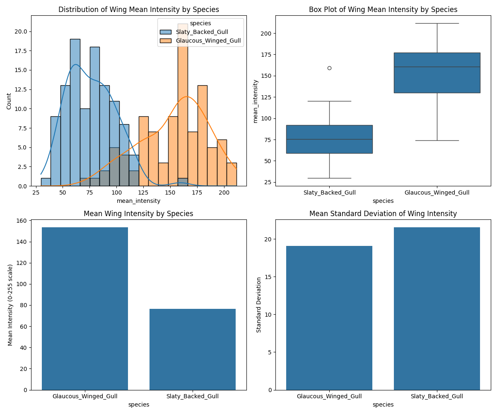

Result: The Slaty-Backed-Gull has darker wings (lower intensity values).
The Glaucous-Winged-Gull wings are approximately 100.6% brighter than the Slaty-Backed-Gull.
| Statistic | Slaty-backed Gull | Glaucous-winged Gull | |-----------|-------------------|----------------------| | Mean intensity | 76.45 | 153.32 | | Standard deviation | 22.36 | 31.49 | | Minimum | 29.64 | 74.23 | | Maximum | 159.33 | 211.69 | | Median | 75.56 | 160.52 | | Mean pixel variation (std) | 21.52 | 19.06 | | Mean skewness | 1.39 | 0.09 | | Mean kurtosis | 5.54 | 1.32 | | Total pixels analyzed | 47,372,951 | 3,886,316 |

The analysis shows that the Slaty-Backed-Gull has significantly darker wings compared to the Glaucous-Winged-Gull, with a mean intensity value of 76.45 compared to 153.32.
The statistical test confirms that this difference is statistically significant (p = 0.00000000).
The analysis was performed by measuring the grayscale intensity of segmented wing regions from images of both species. Intensity values range from 0 (black) to 255 (white), with lower values indicating darker coloration.